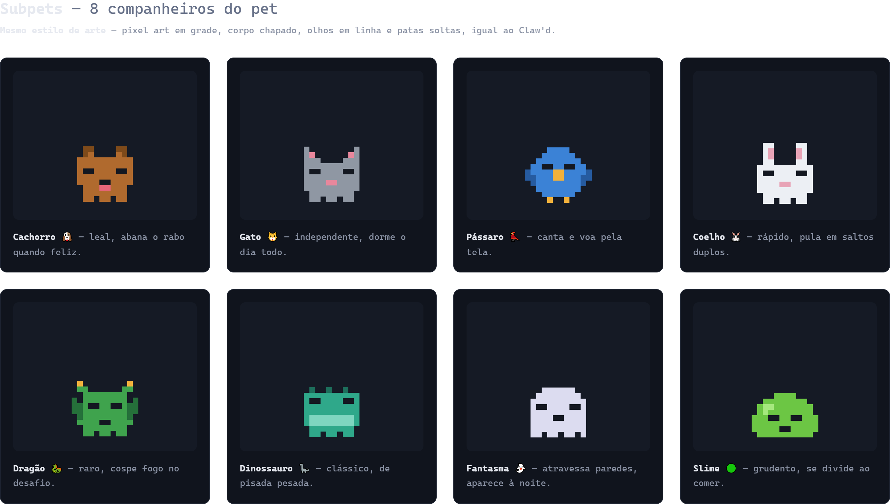

extensão MV3 · local-first · pixel-art
Um pequeno pet.
Um ecossistema inteiro.
Claw'd transforma qualquer página em um espaço vivo: acompanha a navegação, reage ao usuário, assume profissões, evolui e cuida de oito sub-pets — sem servidor e sem telemetria.
- 01 Movimento no refresh rate do navegador
- 02 Persistência versionada e reload seguro
- 03 Interface, teclado, mouse e touch
COMPANHEIRO ONLINE
Olá! 👋
EMOÇÃOCONTENTE● 92%
RENDERrAF↗ Hz nativo
PROGRESSOLV. 121.240 XP
visão do produto
Presença que reage,
não apenas decora.
O mascote entende o ritmo da página e responde com movimento, expressão e contexto. As pernas só entram em ciclo quando há deslocamento real; olhos, boca e balões são camadas independentes; o modo liso preserva a silhueta sem expor grade ou quadrados de fundo.
O resultado é um companheiro discreto quando precisa ser, surpreendente quando recebe atenção e sempre configurável pelo usuário.
demonstração validada · 14/07/2026
Claw'd rodando ao vivo — todo o ecossistema.
Um roteiro executável reproduz as mecânicas dentro desta página. Os contadores combinam os catálogos carregados com a última execução completa da suíte e do smoke test em Chromium.
65/65 contratos automatizados
8/8 scripts verificados
8 profissões · 14 acessórios · 14 ações
8 subpets · 7 ações
3/3 reloads limpos
0 erros de runtime
sessão guiada
Da entrada ao subpet especial.
Use reproduzir, avance pelos capítulos ou escolha qualquer etapa. Esta demonstração não é um vídeo pré-gravado: cada estado abaixo é renderizado e animado localmente, com suporte a teclado e movimento reduzido.
Aqui para ajudar! 👋
ETAPA 01 / 18
Pop-in e boas-vindas
O pet entra com animação, anuncia sua presença e permanece fora do fluxo do documento.
quadro a quadro
18 mecânicas, com contexto e resultado.
As cenas usam o mesmo sprite padrão, os catálogos reais e estados equivalentes aos do runtime para tornar cada recurso fácil de descobrir.
laboratório interativo
Monte o seu Claw'd.
Teste quatro modelos pixel-art, quatro rostos, olhos independentes, o visual liso contínuo, a boca opcional e acessórios sem sair da documentação.
✨
PIXELsprite padrão · pernas em repouso
catálogo vivo
Todo o ecossistema,
em uma única visão.
Os itens abaixo são carregados diretamente do catálogo compartilhado da extensão.
0208
Profissões
Comportamentos e cenas próprias para cada papel.
0314
Acessórios
Dois slots combináveis: cabeça e rosto.
0414
Ações do mascote
Interações manuais, estados e respostas imediatas.
companheiro do companheiro
Sub-pets que dormem,
acordam e brincam.
Oito espécies com skins PNG literais em src/shared/sprites/subpets/. Com paleta padrão você vê o bitmap do pacote; ao customizar corpo/olhos, a vitrine cai no fallback pixel.
Pronto para brincar!
CACHORRO · LV. 2
05
Sub-pet studioPNG literal + fallback pixel
Interações ao vivo

tests/sprite-out/Subpets-selection.png) — os crops literais do pacote saem daqui via tests/tools/_crop-literal-sprites.mjs. sistemas conectados
Mais que animações isoladas.
Cada ação alimenta um ciclo de estado, progressão e resposta visual.
Clique, arraste, touch, scroll, teclado e inatividade.
Movimento, profissão, emoção, necessidades e contexto.
Sprite, fala, emoji, som opcional, partículas e subpet.
XP, níveis, moedas, missões, streak e conquistas.
arquitetura local-first
Uma extensão pequena,
com limites claros.
Estado compartilhado, renderização isolada e coordenação segura entre abas.
Configura, personaliza e dispara ações.
popup.js · popup.cssmensagens↔
Estados, física, animações e profissões.
content.js · style.csspresença↔
Reload seguro e anfitrião entre abas.
background.js
↕FONTE ÚNICACatálogo + storage
Schema v4, migração e persistência local.
catalog.js · chrome.storage◉
Privacidade por arquitetura
Sem conta, servidor, telemetria ou leitura de formulários. As reações contextuais usam apenas o hostname da aba.
tributo
Créditos totais ao Claude.
Todo o mérito de inspiração do mascote, da presença gentil e da ideia de companheiro amigável pertence à Anthropic e ao Claude. Claw'd é só um brinquedo de fãs.
O design flat do modo liso, o carinho visual e a personalidade de “amigável no navegador” existem porque o Claude mostrou como um mascote pode ser acolhedor. Sem isso, esta extensão não existiria.
Extensão intuitiva e interativa, local-first, sem afiliação comercial. Sem receita, ads, telemetria de negócio ou venda de identidade Claude.
Nomes, logos e a marca Anthropic/Claude pertencem aos titulares. Qualquer semelhança é homenagem — não endosso.
Obrigado, Anthropic. Méritos de inspiração e respeito total ao original. Nós só adicionamos pixels, embaixadinhas e um lago de pesca no Chrome.
validação contínua
Qualidade demonstrável.
A suíte combina contratos estáticos, regras de catálogo e execução em Chromium real.
validation.log
$ node --test tests/*.test.js
✓ estado e migrações
✓ sprites, modo liso e acessórios
✓ profissões, pesca e sub-pets
✓ popup, manifest e reload seguro
$ node tests/runtime-smoke.mjs
✓ extensão carregada em Chromium
✓ interações e persistência ao vivo
✓ zero exceções de runtimeSintaxe integral
Todos os scripts são verificados pelo runtime Node antes da entrega.
Contratos de catálogo
Cada item configurável precisa de estado, camada visual e wiring funcional.
Smoke test MV3
Instalação unpacked, popup, aba real, reload e limpeza de órfãos.
Acessibilidade básica
Foco, teclado, labels, regiões ao vivo e preferência de movimento reduzido.
pronto para acompanhar
Carregue. Personalize.
Deixe o Claw'd viver.
Compatível com navegadores Chromium que suportam Manifest V3.
1
Abra chrome://extensions ou edge://extensions.
2
Ative o Modo do desenvolvedor.
3
Clique em Carregar sem compactação.
4
Selecione a raiz do projeto e abra uma página comum.
CLAW'D READYconfiguração salva localmente